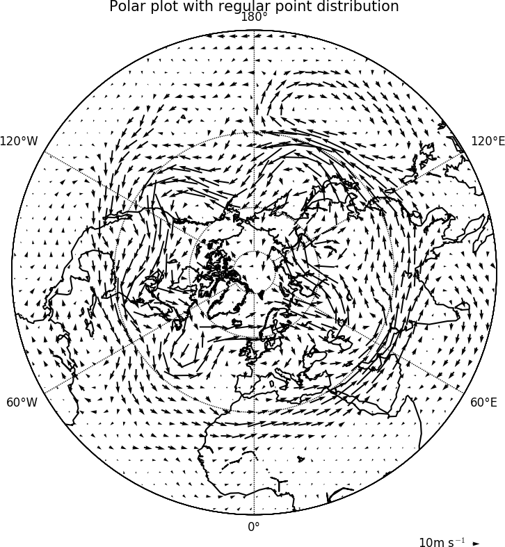

Vectors¶
Example 13 - vector plot¶

import cf
import cfplot as cfp
f=cf.read('cfplot_data/ggap.nc')
u=f[1].subspace(pressure=500)
v=f[2].subspace(pressure=500)
cfp.vect(u=u, v=v, key_length=10, scale=100, stride=5)
Example 14 - vector plot with colour contour map¶

import cf
import cfplot as cfp
f=cf.read('cfplot_data/ggap.nc')
u=f[1].subspace(pressure=500)
v=f[2].subspace(pressure=500)
t=f[0].subspace(pressure=500)
cfp.gopen()
cfp.mapset(lonmin=10, lonmax=120, latmin=-30, latmax=30)
cfp.levs(min=254, max=270, step=1)
cfp.con(t)
cfp.vect(u=u, v=v, key_length=10, scale=50, stride=2)
cfp.gclose()
In this plot we overlay a vector plot on a contoured temperature field.
Example 15 - polar vector plot¶
{kind=link}
Here we see the difference between plotting the vectors on the data grid and on a interpolated grid. The supplied grid gives a bullseye effect making the wind direction difficult to see near the pole.
import cf
import cfplot as cfp
u=cf.read('cfplot_data/ggap.nc')[1]
v=cf.read('cfplot_data/ggap.nc')[2]
u=u.subspace(Z=500)
v=v.subspace(Z=500)
cfp.mapset(proj='npstere')
cfp.gopen(columns=2)
cfp.vect(u=u, v=v, key_length=10, scale=100, stride=4, title='Polar plot using data grid')
cfp.gpos(2)
cfp.vect(u=u, v=v, key_length=10, scale=100, pts=40, title='Polar plot with regular point distribution')
cfp.gclose()
Example 16 - zonal vector plot¶

import cf
import cfplot as cfp
c=cf.read('cfplot_data/vaAMIPlcd_DJF.nc')[0]
c=c.subspace(Y=cf.wi(-60,60))
c=c.subspace(X=cf.wi(80,160))
c=c.collapse('T: mean X: mean')
g=cf.read('cfplot_data/wapAMIPlcd_DJF.nc')[0]
g=g.subspace(Y=cf.wi(-60,60))
g=g.subspace(X=cf.wi(80,160))
g=g.collapse('T: mean X: mean')
cfp.vect(u=c, v=-g, key_length=[5, 0.05], scale=[20,0.2], title='DJF', key_location=[0.95, -0.05])
Here we make a zonal mean vector plot with different vector keys and scaling factors for the X and Y directions.